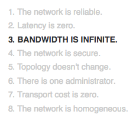

Once a month, for every customer, score and send an email
Exact Target Call
~ 3.3 seconds
(60 × 60 × 24) ÷ 5.7 seconds
≈ 15k customers per day
600k customers ÷ 30 days
≈ 20k customers per day
Just call HD
(60 × 60 × 24) ÷ 2.4 seconds
≈ 36k customers per day
36k customers per day × 30 days
≈ 1'080k max customers per month
⚠️
Fallacies of distributed computing

Architectural Requirements
fault tolerant
pausable
parallel processing (with care!)
🔍
Pull Approach
🛎
Push approach
📮
Message Queues
🛎 + 📮
✔ parallel processing
Overall processing looks like
Fin